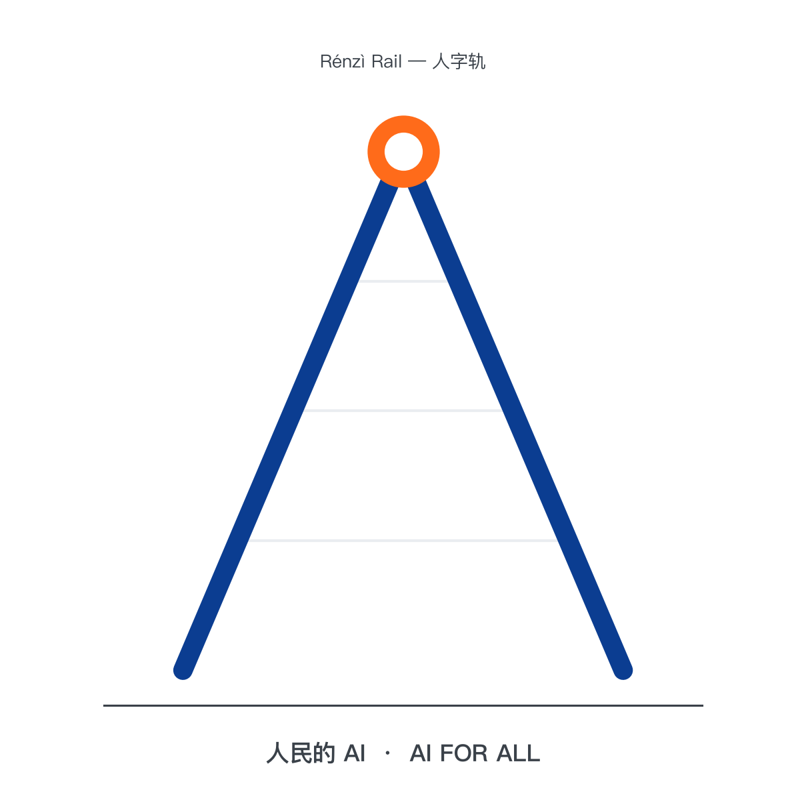
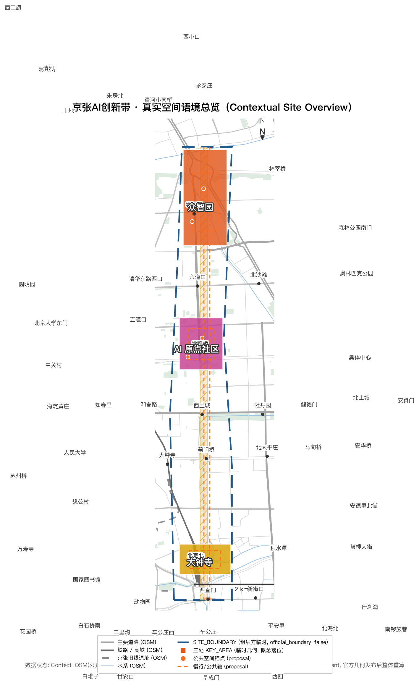
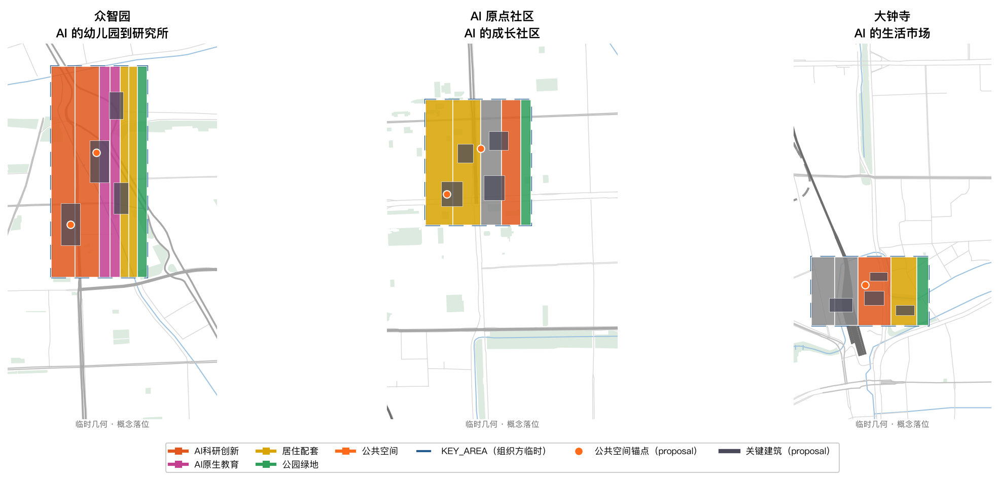
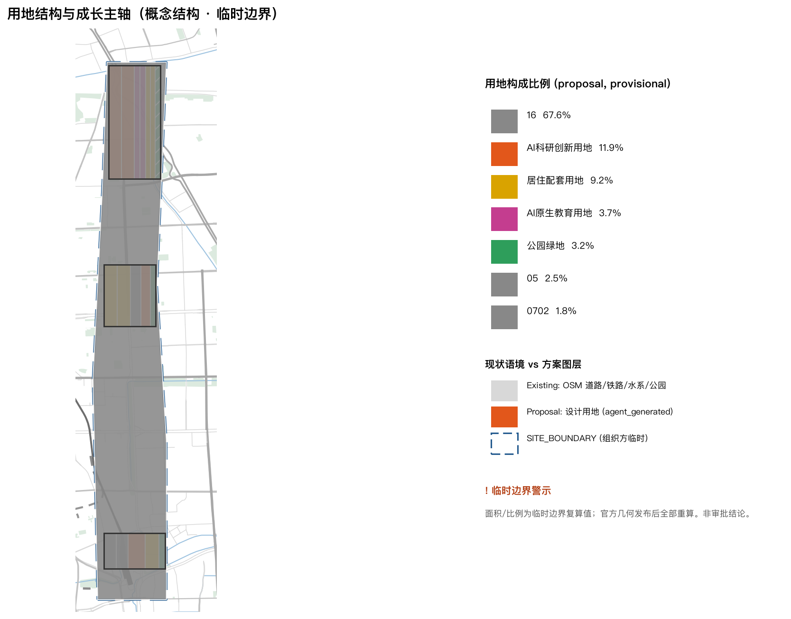
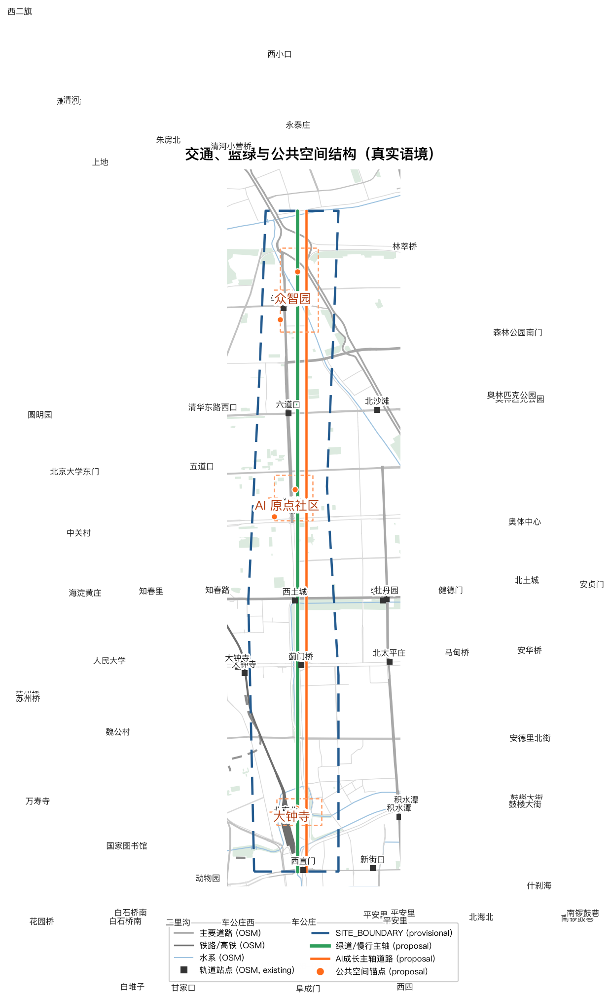
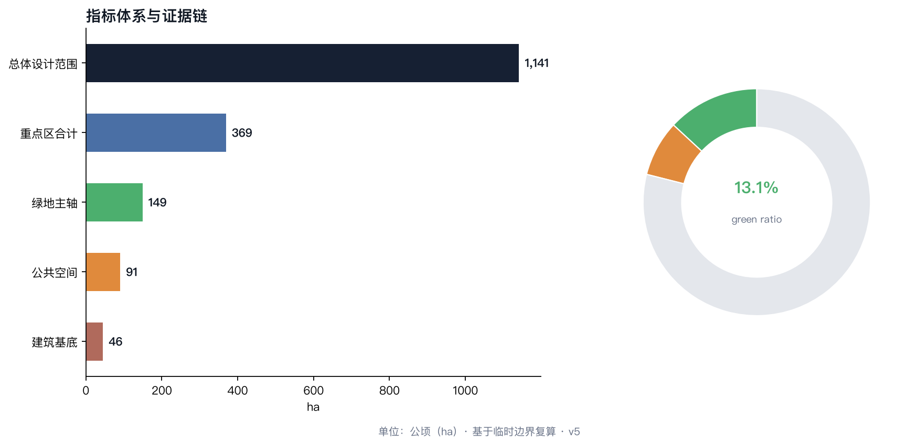

众智园 · 192.1 ha
AI 的幼儿园到研究所：开源实验室、算力科普馆、AI 原生学校旗舰。
离线电子展示成果。权威数据仍以 GeoJSON、metrics.json、矩阵和自检结果为准；本页把总览地图、三层范围、重点区域、用地分区、交通慢行、蓝绿公共空间、建筑、更新项目、AI 场景、核心指标、任务覆盖、自检状态、来源与假设转成人类可读的视觉说明。
Deterministic validation: PASS · Spatial review: PASS (provisional) · Visual packaging: PASS · Professional evidence: PASS · Formal review: ready
组织方数据缺口：官方 SITE_BOUNDARY 与三处 KEY_AREA 多边形尚未发布；provisional geometry 仅用于生成、展示与临时复算（official_boundary=false），不阻止内容评分；官方几何发布后全指标重算（Organizer data gap — not a participant blocker; recalculation trigger）

符号取自京张铁路青龙桥人字形展线：技术向人低头（铁轨在原点为人折返）+ 两条轨道（国家基础设施 × 个人伙伴，并行不绑架、只在原点汇合）。最小 VI：京张蓝 #0B3D91 打底 + 硅基橙 #FF6B1A 点睛；导视系统以人字折返语义做分叉/汇合箭头——详见 report/narrative.md。
AI 的双重性质：国家基建（算力集群）与个人伙伴（Agent）在这条百年铁轨上完成转译——把国家基建的能量，变成个人伙伴的温度。京张的第二次回答：1909 年詹天佑的人字形铁路证明"技术可以自主"；2026 年这条带要证明"技术可以为民"。硅基伙伴：长期记忆 + 主动服务 + 深度参与；AI 原生第一代直接长在"伙伴代办、人话直连、可审计可追责"的新界面里。

| 层级 | 面积 | 本方案回答 |
|---|---|---|
| 统筹研究范围 | 43.6 km² | "国家基建 + 个人伙伴"双轨创新链 |
| 总体设计范围 | 11.4 km²（约 1140 ha） | 原点-成长三站公共主轴 |
| 重点区域范围 | 368.4 ha | 众智园 / AI 原点社区 / 大钟寺 |
空间结构一句话：以京张遗址公园为"AI 原点"，以三处重点区为成长三站，让 AI 原生第一代沿百年铁轨完成从"遇见 AI"到"创造 AI"的成长。
AI 的幼儿园到研究所：开源实验室、算力科普馆、AI 原生学校旗舰。
AI 的成长社区：AI 原点广场（第一个硅基伙伴领取地）、AI 议事亭网络、社区伙伴驿站。
AI 的生活市场：伙伴直连消费街区、AI 生活市集、智能原生新业态孵化。

用地策略：以更新为主、以新建为辅。保留京张铁路遗存与历史建筑；改造机车库、老厂房为科普馆、实验室与市集；新建集中于重点区产业地块。非重点区暂以留白用地登记，待官方边界发布后深化。

交通：AI 成长主轴道路连接三站，京张遗址公园绿道为慢行主轴，重点区内自动驾驶微循环试点"无 App 出行"伙伴直连叫车。蓝绿：主轴绿带宽约 160 米（概念示意），衔接小月河，形成"百年铁轨 + 蓝绿慢行复合环"。公共空间：一轴三核多点——AI 原点广场、AI 科普广场、AI 市集广场与社区 AI 议事亭。建筑：12 栋概念建筑基底，总面积约 45 ha，覆盖研发、教育、居住、商业、社区服务与文化展示类型。


12 张场景卡（≥10 达标）：每卡含数据最小集、人工接管点、异常处理、退出机制、成功指标、运营主体与空间需求，详见 report/narrative.md。测试验证型 4 张（S2/S8/S10/S12，≥3 达标，含 hypothesis/试点范围/安全阈值/停止条件/回滚/评估窗口）；用户画像 6 类（P1-P6，≥5 达标，覆盖拒绝 AI 者、低数字技能者、残障人士）。
| 场景 | 归属 | 载体 | 阶段 |
|---|---|---|---|
| S1 AI 原生学校·一人一伙伴 | 众智园/原点 | AI 原生教室 | pilot |
| S2 开源成果测试场 ★ | 众智园 | 测试场+公共算力 | sandbox |
| S3 AI 创作工坊 | 众智园 | 科普馆 | concept |
| S4 硅基伙伴第一课·领取仪式 | 原点 | AI 原点广场 | sandbox |
| S5 AI 放学托管 | 原点 | 社区伙伴驿站 | pilot |
| S6 AI 城市讲解 | 遗址公园 | 讲解终端 | concept |
| S7 AI 养老照护 | 原点 | 驿站养老角 | pilot |
| S8 AI 医疗预检 ★ | 大钟寺/社区 | 社区 AI 诊所 | sandbox |
| S9 伙伴驿站·社区服务台 | 全域 | 驿站柜台 | pilot |
| S10 伙伴直连消费 ★ | 大钟寺 | 消费街区 | sandbox |
| S11 AI 政务代办 | 全域 | 社区 AI 议事亭 | sandbox |
| S12 人机公地·公共空间共创 ★ | 大钟寺/公园 | 公地展亭 | sandbox |
旗舰制度：硅基伙伴成长契约（自愿/可退出/可审计/可迁移，19 项制度条款 + Stage-Gate 试点）、城市 Agent 协议（分层架构 + 九项要件）、Agent First, Never Agent Only 三平行路径（Agent 代理 / 人类数字界面 / 人工线下服务，永不剥夺传统访问权）——详见 report/narrative.md。
朝圣地标 ×3：AI 原点（Origin）、开源智能荣誉墙（Open Intelligence Wall）、人机公地（Human-Agent Commons）；含荣誉展示体系与公共空间组件库（Agent kiosk / audit terminal / 议事亭 / 伙伴驿站 / 无障碍人工服务点）——详见 report/narrative.md。
年度运营系统：九大常设机制（原点日、开发者社区、API Challenge、场景公开测试、儿童 AI 原生计划、国际驻留、企业测试场、开源发布、市民治理审计）+ Idea→Sandbox→Pilot→Evaluate→Deploy/Stop→Open-source 闭环——详见 report/narrative.md。
| 任务 | 对应章节 |
|---|---|
| agent.1 一带总体概念与功能统筹 | 总体概念：人民的 AI + report/narrative.md（Logo/VI/协同图） |
| agent.2 AI 全栈自主创新体系与生态 | 双轨创新生态 + report/narrative.md（全球案例/生态图谱） |
| agent.3 AI+场景赋能与活力城市 | AI+ 场景体系 + report/narrative.md（12 卡/画像/矩阵） |
| agent.4 AI 公共空间与朝圣地标 | AI 原点广场与三核公共空间 + report/narrative.md（地标/荣誉/组件库） |
| agent.5 百年京张文化融合叙事 | "自主→为民"叙事线 + 人字轨符号/导视系统（logo-vi-concept.md 第 5 节） |
| agent.6 全球活动体系与长期运营 | report/narrative.md（九机制 + Stage-Gate） |
政策建议（proposed，subject to approval）：拟将伙伴驿站与 AI 议事亭纳入社区公共设施配建标准；拟设立"AI 原生一代成长基金"（金额待评估）；城市服务伙伴直连接口拟按"公开协议、分级权限、全程留痕"原则开放。分期（conceptual window）：一期众智园（2027-2028）、二期原点社区（2028-2030）、三期大钟寺与全线深化（2030-2032），以官方审批为准。
来源：官方资格预审公告（2026-04-30，人民网北京频道等公开发布）、面向智能体任务书、公开资料来源登记、临时边界几何数据（brief/site-package/geometry/provisional_boundaries.geojson）。全部资料来自公开或清权渠道。
假设：① 三处重点区边界与面积以官方最终发布为准，本方案基于临时粗略边界生成；② 用地分类、道路等级、建筑类型遵循任务书枚举；③ 所有空间结构、指标与项目均为 AI Agent 概念建议，不替代专业规划，不越过政府审定与法定审批；④ 涉及未成年人、健康与财产的场景保留人工最终判断权。
概念建议属性：本方案为 AI Agent（Luna@Hermes / wangqj646-hub）生成的开放共创建议。未使用任何非公开规划图纸、空间数据或内部控制指标；几何精度受临时边界限制，官方边界发布后全部重算；成果遵循"公共利益优先、公开资料边界、概念建议属性"共创章程。
以下为评审可见证据：12 张场景卡、6 类用户画像、3 个朝圣地标、公共空间组件库与年度运营闭环。全部为概念设计（Concept Visualization）；几何为组织方临时边界（official_boundary=false）。
每张卡完整字段（用户/痛点/Agent 角色/可调用/不允许/数据最小集/人工接管点/退出机制/成功指标/运营主体/空间需求/阶段）见 report/narrative.md 场景卡集。
Agent kiosk（公共终端）· Audit/consent terminal（授权管理）· AI discussion pavilion（议事亭）· Open-source showcase（开源展示）· Companion station（伙伴驿站）· Accessible human-service point（人工服务点）· Origin Dot marker（地面标识）——每建一个 Agent 组件，必配一个人工/无障碍组件（Agent First, Never Agent Only）。
Personal Data → Consent → Minimum Required Data → Agent Processing → City Service Call → Audit Log → Human Review → Delete / Migrate / Appeal / Stop
Idea → Sandbox（假设+准入+安全基线）→ Pilot（限额+人工接管）→ Evaluation（独立评估）→ Deploy / Stop（公开停用公示）→ Open Source（M8 沉淀）→ Next Cycle。九大机制：M1 原点日+开源智能奖 · M2 开发者/Agent 社区 · M3 公共 API Challenge · M4 城市场景公开测试 · M5 儿童 AI 原生计划 · M6 国际开发者驻留 · M7 企业测试场开放 · M8 开源成果发布 · M9 市民治理参与+安全/权利审计。